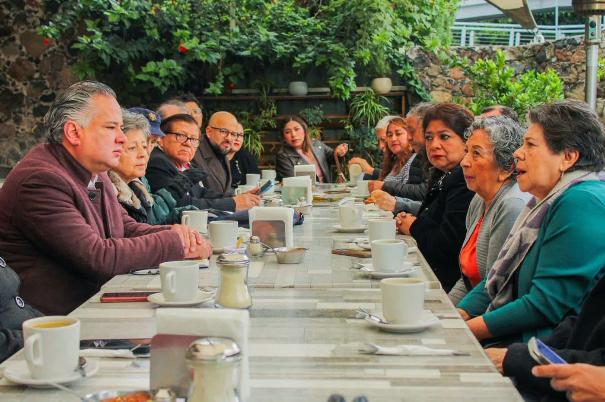
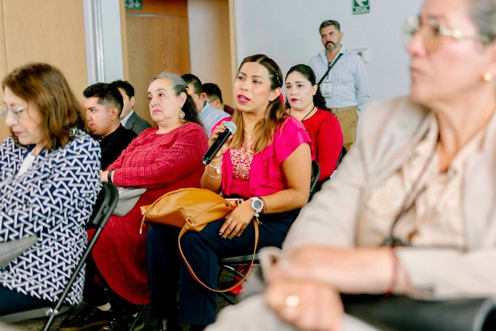

Territorio
La política se hace caminando las comunidades. Estas son algunas de las gestiones que he impulsado en El Marqués.
CBTIS 304
Lideré la gestión de 2 hectáreas para el nuevo plantel, que dará servicio a 1,500 estudiantes.
Centro Integrador de Desarrollo
Pieza clave en la gestión de este centro que acerca los programas del Gobierno de México a las familias.
Oficina de Becas Benito Juárez
Gestión de una oficina en el municipio para que las y los estudiantes realicen sus trámites sin trasladarse lejos.
Nueva ruta de transporte
Propuesta para conectar comunidades y cubrir más del 60% del territorio municipal.
Crucero frente al Tren México–Querétaro
He exigido atención prioritaria a este crucero ante las obras del tren, por la seguridad de quienes lo cruzan a diario.
Zona natural y tradicional
Impulso a su protección para conservar su valor ambiental y cultural.
En las comunidades




Trabajo hombro con hombro
Fomento la organización de las comunidades con tequios, jornadas de reforestación e impulso a actividades extraescolares como equipos deportivos y bandas de guerra.